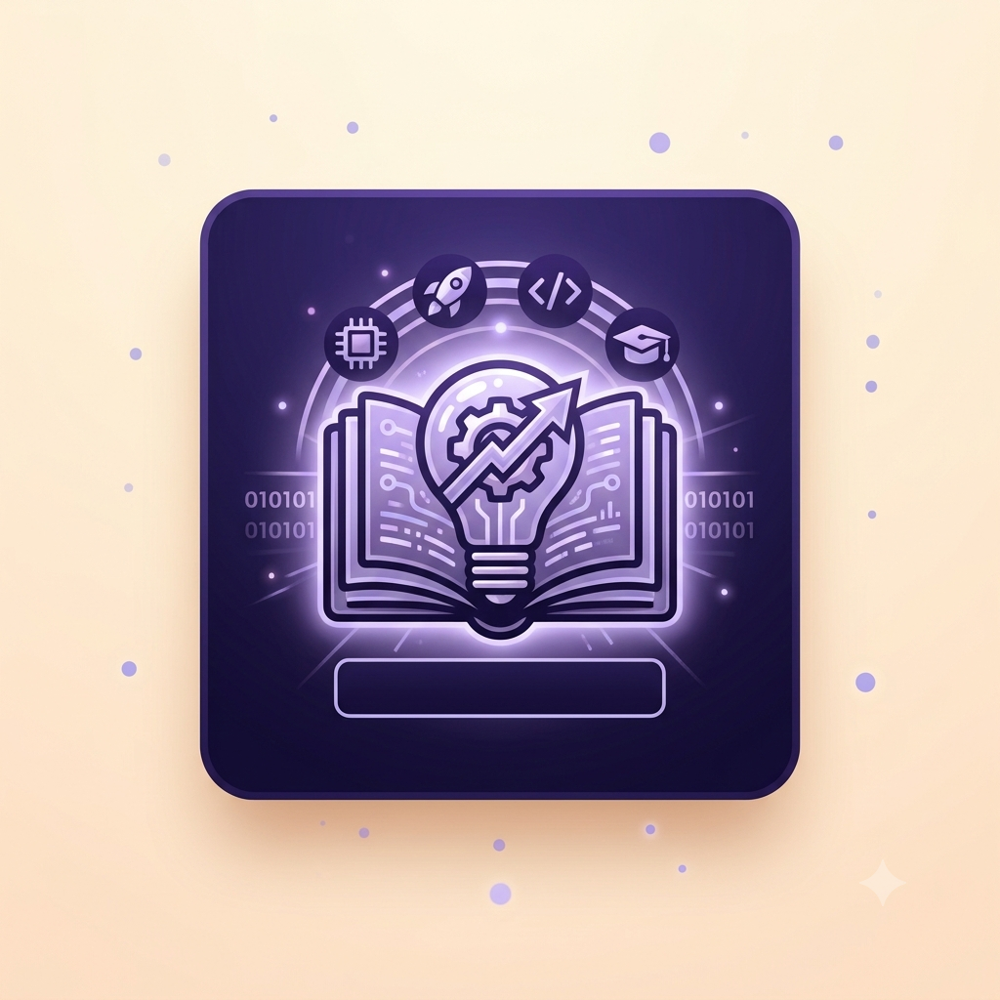

Meu primeiro postPor: Thaynan Vinicius
Boas-vindas ao meu novo blog! Aqui Vou compartilhar dicas de programação e curiosidades da área de tecnologia.
Vou compartilhar conhecimentos sobre tecnologia e programação

Meu primeiro postPor: Thaynan Vinicius
Boas-vindas ao meu novo blog! Aqui Vou compartilhar dicas de programação e curiosidades da área de tecnologia.